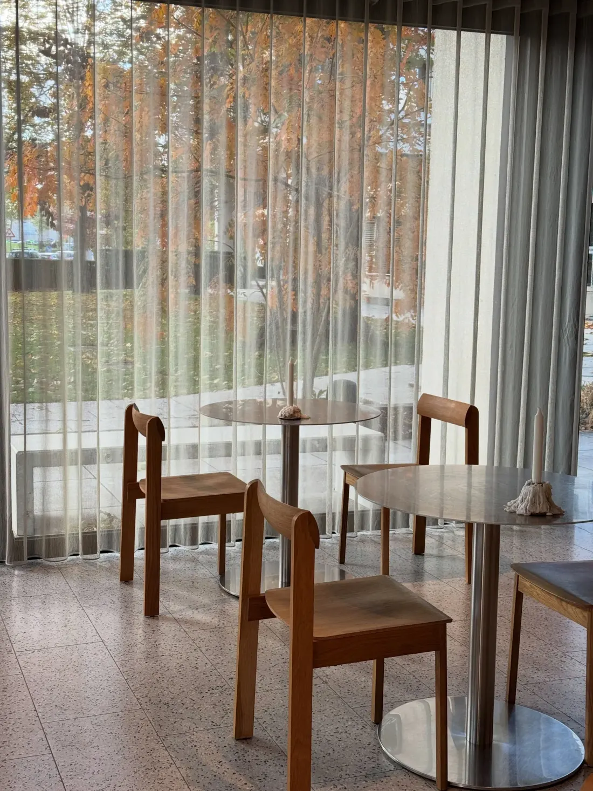

Brousse Table, door Elien
Schuif aan, de koffie loopt al.
Ontbijt en lunch met wat het seizoen ons geeft, gebak uit onze eigen oven en koffie waar we echt werk van maken. In Brousse, het huis voor kunst, muziek en eten.
Reserveren hoeft niet. Je zoekt een plekje en bestelt aan de toog.
 Van het seizoen
Van het seizoen
4,7★★★★★139 reviews op Google